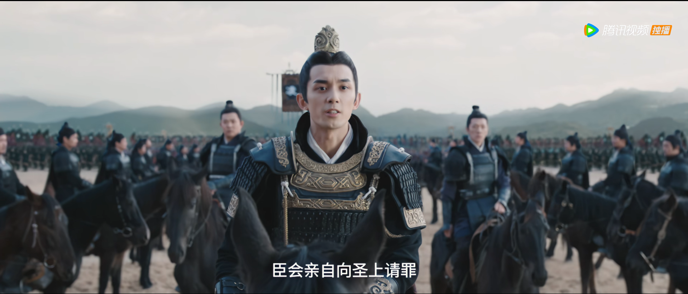

第1集
第2集
第3集
第4集
第5集
回到初始页
首页
人物介绍
剧情简介
高光时刻
关于作者
剧情简介更新：
选择集数:
--请选择--
第1集
第2集
第3集
第4集
第5集
第6集
其他
有关主要人物：
凌不疑
程少商
程始
萧元漪
文帝
其他
评分：
1
2
3
4
5
简要介绍剧情
图片：
剧情简介
第1集
主要人物：
凌不疑
程少商
评分：
4

陇西大捷，将军凌不疑率领大军班师回朝，受皇上重重封赏。然而就在宣旨太监请他前去面圣之时，凌不疑却声称有要案要查，事情完成之后自会向皇上请罪。